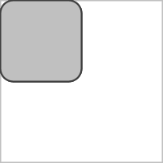
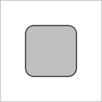
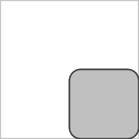
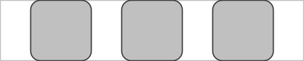
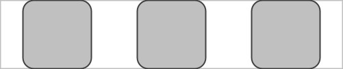

| Type | Name | Description |
|---|---|---|
| BYTE | Header | Value: 0 |
| INT | majorVersion | Major version |
| INT | minorVersion | Minor version |
| INT | patchVersion | Patch version |
| INT | width | Document width in pixels |
| INT | height | Document height in pixels |
| LONG | capabilities | Capabilities mask |
| Type | Name | Description |
|---|---|---|
| BYTE | Theme | Value: 63 |
| INT | THEME | theme id |
| Type | Name | Description |
|---|---|---|
| BYTE | Rem | Value: 185 |
| UTF8 | text | The comment string |
| Type | Name | Description |
|---|---|---|
| BYTE | ContainerEnd | Value: 214 |
| Type | Name | Description |
|---|---|---|
| BYTE | FloatConstant | Value: 80 |
| INT | id | id of the Float constant |
| FLOAT | value | 32-bit float value |
| Type | Name | Description |
|---|---|---|
| BYTE | BitmapData | Value: 101 |
| INT | imageId | The ID of the bitmap |
| INT | widthAndType | Encoded width and image type |
| INT | heightAndEncoding | Encoded height and data encoding |
| BYTE[] | bitmap | The raw or encoded bitmap data |
| Type | Name | Description |
|---|---|---|
| BYTE | NamedVariable | Value: 137 |
| INT | varId | id to label |
| INT | varType | The type of variable |
| UTF8 | name | String |
| Type | Name | Description |
|---|---|---|
| BYTE | IntegerConstant | Value: 140 |
| INT | id | id of the Int constant |
| INT | value | 32-bit int value |
| Type | Name | Description |
|---|---|---|
| BYTE | BooleanConstant | Value: 143 |
| INT | id | id of Int |
| BYTE | value | 8-bit 0 or 1 |
| Type | Name | Description | ||||||||||||
|---|---|---|---|---|---|---|---|---|---|---|---|---|---|---|
| BYTE | DataMapIds | Value: 145 | ||||||||||||
| INT | id | The ID of the map | ||||||||||||
| INT | length | Number of entries | ||||||||||||
| REPEATED DATA |
| |||||||||||||
| Type | Name | Description |
|---|---|---|
| BYTE | IdListData | Value: 146 |
| INT | id | The ID of the list |
| INT | length | Number of IDs |
| INT[] | ids | The array of IDs |
| Type | Name | Description |
|---|---|---|
| BYTE | IdListData | Value: 147 |
| INT | id | The ID of the list |
| INT | length | Number of floats |
| FLOAT[] | values | The array of floats |
| Type | Name | Description |
|---|---|---|
| BYTE | LongConstant | Value: 148 |
| INT | id | id of the Long constant |
| LONG | value | The long Value |
| Type | Name | Description |
|---|---|---|
| BYTE | DataMapLookup | Value: 154 |
| INT | id | The ID of the output value |
| INT | dataMapId | The ID of the data map |
| INT | stringId | The ID of the string to look up |
| Type | Name | Description |
|---|---|---|
| BYTE | FontData | Value: 189 |
| INT | fontId | The ID of the font |
| INT | type | The type of the font (unused) |
| BYTE[] | fontData | The raw font file data |
| Type | Name | Description |
|---|---|---|
| BYTE | DataDynamicListFloat | Value: 197 |
| INT | id | The ID of the list |
| FLOAT | length | The length of the list |
| Type | Name | Description |
|---|---|---|
| BYTE | UpdateDynamicFloatList | Value: 198 |
| INT | arrayId | The ID of the array |
| FLOAT | index | The index to update |
| FLOAT | value | The new value |
| Type | Name | Description |
|---|---|---|
| BYTE | PaintData | Value: 40 |
| INT[] | paintBundle | The encoded paint properties |
| Type | Name | Description |
|---|---|---|
| BYTE | ShaderData | Value: 45 |
| INT | shaderID | The ID of the shader |
| INT | shaderTextId | The ID of the shader source text |
| INT | sizes | Encoded sizes of uniform maps (float, int, bitmap) |
| UTF8 | floatUniformName[0..n] | Name of float uniform |
| INT | floatUniformLength[0..n] | Length of float uniform |
| FLOAT[] | floatUniformValues[0..n] | Values of float uniform |
| UTF8 | intUniformName[0..n] | Name of int uniform |
| INT | intUniformLength[0..n] | Length of int uniform |
| INT[] | intUniformValues[0..n] | Values of int uniform |
| UTF8 | bitmapUniformName[0..n] | Name of bitmap uniform |
| INT | bitmapUniformValue[0..n] | ID of bitmap uniform |
| Type | Name | Description |
|---|---|---|
| BYTE | ColorExpression | Value: 134 |
| INT | id | The ID of the resulting color |
| INT | mode | The color calculation mode |
| INT | param1 | First parameter (color1, hue, or alpha depending on mode) |
| INT | param2 | Second parameter (color2, saturation, or red depending on mode) |
| INT | param3 | Third parameter (tween, value, or green depending on mode) |
| INT | param4 | Fourth parameter (blue, only used in ARGB modes) |
| Type | Name | Description |
|---|---|---|
| BYTE | ColorConstant | Value: 138 |
| INT | colorId | The ID of the color |
| INT | color | 32-bit ARGB color value |
| Type | Name | Description |
|---|---|---|
| BYTE | ColorAttribute | Value: 180 |
| INT | id | The ID to output the result to |
| INT | colorId | The ID of the source color |
| SHORT | type | The component to extract |
| Type | Name | Description |
|---|---|---|
| BYTE | ColorTheme | Value: 196 |
| INT | id | The ID of the color |
| INT | groupId | The ID of the color group name string |
| SHORT | lightModeIndex | The ID of the color in the light group |
| SHORT | darkModeIndex | The ID of the color in the dark group |
| INT | lightModeFallback | 32-bit ARGB fallback color for light mode |
| INT | darkModeFallback | 32-bit ARGB fallback color for dark mode |
| Type | Name | Description |
|---|---|---|
| BYTE | DrawRect | Value: 42 |
| FLOAT | left | The left side of the rectangle |
| FLOAT | top | The top of the rectangle |
| FLOAT | right | The right side of the rectangle |
| FLOAT | bottom | The bottom of the rectangle |
| Type | Name | Description |
|---|---|---|
| BYTE | DrawBitmap | Value: 44 |
| INT | imageId | The ID of the bitmap |
| FLOAT | left | The left side of the image |
| FLOAT | top | The top of the image |
| FLOAT | right | The right side of the image |
| FLOAT | bottom | The bottom of the image |
| INT | descriptionId | The ID of the content description string |
| Type | Name | Description |
|---|---|---|
| BYTE | DrawCircle | Value: 46 |
| FLOAT | centerX | The x-coordinate of the center of the circle to be drawn |
| FLOAT | centerY | The y-coordinate of the center of the circle to be drawn |
| FLOAT | radius | The radius of the circle to be drawn |
| Type | Name | Description |
|---|---|---|
| BYTE | DrawLine | Value: 47 |
| FLOAT | startX | The x-coordinate of the start point of the line |
| FLOAT | startY | The y-coordinate of the start point of the line |
| FLOAT | endX | The x-coordinate of the end point of the line |
| FLOAT | endY | The y-coordinate of the end point of the line |
| Type | Name | Description |
|---|---|---|
| BYTE | DrawRoundRect | Value: 51 |
| FLOAT | left | The left side of the rect |
| FLOAT | top | The top of the rect |
| FLOAT | right | The right side of the rect |
| FLOAT | bottom | The bottom of the rect |
| FLOAT | rx | The x-radius of the oval used to round the corners |
| FLOAT | ry | The y-radius of the oval used to round the corners |
| Type | Name | Description |
|---|---|---|
| BYTE | DrawSector | Value: 52 |
| FLOAT | left | The left side of the Oval |
| FLOAT | top | The top of the Oval |
| FLOAT | right | The right side of the Oval |
| FLOAT | bottom | The bottom of the Oval |
| FLOAT | startAngle | Starting angle (in degrees) where the arc begins |
| FLOAT | sweepAngle | Sweep angle (in degrees) measured clockwise |
| Type | Name | Description |
|---|---|---|
| BYTE | DrawOval | Value: 56 |
| FLOAT | left | The left side of the oval |
| FLOAT | top | The top of the oval |
| FLOAT | right | The right side of the oval |
| FLOAT | bottom | The bottom of the oval |
| Type | Name | Description |
|---|---|---|
| BYTE | DrawBitmapInt | Value: 66 |
| INT | imageId | The ID of the bitmap |
| INT | srcLeft | The left side of the source image |
| INT | srcTop | The top of the source image |
| INT | srcRight | The right side of the source image |
| INT | srcBottom | The bottom of the source image |
| INT | dstLeft | The left side of the destination |
| INT | dstTop | The top of the destination |
| INT | dstRight | The right side of the destination |
| INT | dstBottom | The bottom of the destination |
| INT | cdId | The ID of the content description string |
| Type | Name | Description |
|---|---|---|
| BYTE | DrawPath | Value: 124 |
| INT | id | The ID of the path to draw |
| Type | Name | Description |
|---|---|---|
| BYTE | DrawTweenPath | Value: 125 |
| INT | path1Id | The ID of the first path |
| INT | path2Id | The ID of the second path |
| FLOAT | tween | Interpolation value [0..1] |
| FLOAT | start | Trim the start of the path [0..1] |
| FLOAT | stop | Trim the end of the path [0..1] |
| Type | Name | Description |
|---|---|---|
| BYTE | DrawContent | Value: 139 |
| Type | Name | Description |
|---|---|---|
| BYTE | DrawBitmapScaled | Value: 149 |
| INT | imageId | The ID of the bitmap |
| FLOAT | srcLeft | The left side of the source image |
| FLOAT | srcTop | The top of the source image |
| FLOAT | srcRight | The right side of the source image |
| FLOAT | srcBottom | The bottom of the source image |
| FLOAT | dstLeft | The left side of the destination |
| FLOAT | dstTop | The top of the destination |
| FLOAT | dstRight | The right side of the destination |
| FLOAT | dstBottom | The bottom of the destination |
| INT | scaleType | Type of scaling to apply |
| FLOAT | scaleFactor | Factor for fixed scale |
| INT | cdId | The ID of the content description string |
| Type | Name | Description |
|---|---|---|
| BYTE | DrawArc | Value: 152 |
| FLOAT | left | The left side of the Oval |
| FLOAT | top | The top of the Oval |
| FLOAT | right | The right side of the Oval |
| FLOAT | bottom | The bottom of the Oval |
| FLOAT | startAngle | Starting angle (in degrees) where the arc begins |
| FLOAT | sweepAngle | Sweep angle (in degrees) measured clockwise |
| Type | Name | Description |
|---|---|---|
| BYTE | PathTween | Value: 158 |
| INT | outId | The ID of the resulting interpolated path |
| INT | pathId1 | The ID of the first source path |
| INT | pathId2 | The ID of the second source path |
| FLOAT | tween | The interpolation factor [0..1] |
| Type | Name | Description |
|---|---|---|
| BYTE | PathCreate | Value: 159 |
| INT | id | The ID of the path to create |
| FLOAT | startX | The X coordinate of the starting point |
| FLOAT | startY | The Y coordinate of the starting point |
| Type | Name | Description |
|---|---|---|
| BYTE | PathAppend | Value: 160 |
| INT | id | The ID of the path to append to |
| INT | length | The number of elements in the path data |
| FLOAT[] | pathData | The sequence of commands and coordinates |
| Type | Name | Description |
|---|---|---|
| BYTE | CanvasOperations | Value: 173 |
| Type | Name | Description |
|---|---|---|
| BYTE | PathCombine | Value: 175 |
| INT | outId | The ID of the resulting path |
| INT | pathId1 | The ID of the first source path |
| INT | pathId2 | The ID of the second source path |
| BYTE | operation | The boolean operation to perform |
| Type | Name | Description |
|---|---|---|
| BYTE | DrawToBitmap | Value: 190 |
| INT | bitmapId | The bitmap to draw to or 0 to draw to the canvas |
| INT | mode | Flags to support configuration of bitmap |
| INT | color | set the initial of the bitmap |
| Type | Name | Description |
|---|---|---|
| BYTE | DrawText | Value: 43 |
| INT | textId | The ID of the text to render |
| INT | start | The start index of the text to render |
| INT | end | The end index of the text to render |
| INT | contextStart | The index of the start of the shaping context |
| INT | contextEnd | The index of the end of the shaping context |
| FLOAT | x | The x position at which to draw the text |
| FLOAT | y | The y position at which to draw the text |
| BOOLEAN | rtl | Whether the run is in RTL direction |
| Type | Name | Description |
|---|---|---|
| BYTE | DrawBitmapFontText | Value: 48 |
| INT | textId | The ID of the text to render |
| INT | bitmapFontId | The ID of the bitmap font |
| INT | start | The start index of the text to render |
| INT | end | The end index of the text to render |
| FLOAT | x | The x position at which to draw the text |
| FLOAT | y | The y position at which to draw the text |
| Type | Name | Description |
|---|---|---|
| BYTE | DrawBitmapFontTextOnPath | Value: 49 |
| INT | textId | The ID of the text to render |
| INT | bitmapFontId | The ID of the bitmap font |
| INT | pathId | The ID of the path to follow |
| INT | start | The start index of the text to render |
| INT | end | The end index of the text to render |
| FLOAT | yAdj | Vertical adjustment relative to the path |
| Type | Name | Description |
|---|---|---|
| BYTE | DrawTextOnPath | Value: 53 |
| INT | textId | The ID of the text |
| INT | pathId | The ID of the path |
| FLOAT | hOffset | Horizontal offset along the path |
| FLOAT | vOffset | Vertical offset relative to the path |
| Type | Name | Description |
|---|---|---|
| BYTE | DrawTextOnCircle | Value: 57 |
| INT | textId | The ID of the text |
| FLOAT | centerX | The x coordinate of the center |
| FLOAT | centerY | The y coordinate of the center |
| FLOAT | radius | The radius of the circle |
| FLOAT | startAngle | The start angle in degrees |
| FLOAT | warpRadiusOffset | The warp radius offset |
| INT | alignment | The alignment of the text |
| INT | placement | The placement of the text |
| Type | Name | Description |
|---|---|---|
| BYTE | TextData | Value: 102 |
| INT | textId | The ID of the text |
| UTF8 | text | The string value |
| Type | Name | Description |
|---|---|---|
| BYTE | DrawTextAnchored | Value: 133 |
| INT | textId | The ID of the text to render |
| FLOAT | x | The x-position of the anchor point |
| FLOAT | y | The y-position of the anchor point |
| FLOAT | panX | The horizontal pan from left(-1) to right(1), 0 being centered |
| FLOAT | panY | The vertical pan from top(-1) to bottom(1), 0 being centered |
| INT | flags | Behavior flags |
| Type | Name | Description |
|---|---|---|
| BYTE | TextFromFloat | Value: 135 |
| INT | textId | The ID of the resulting text |
| FLOAT | value | The float value to convert |
| SHORT | digitsBefore | Number of digits before the decimal point |
| SHORT | digitsAfter | Number of digits after the decimal point |
| INT | flags | Formatting and padding flags |
| Type | Name | Description |
|---|---|---|
| BYTE | TextMerge | Value: 136 |
| INT | textId | The ID of the resulting text |
| INT | srcId1 | The ID of the first source string |
| INT | srcId2 | The ID of the second source string |
| Type | Name | Description |
|---|---|---|
| BYTE | TextFromFloat | Value: 151 |
| INT | textId | The ID of the resulting text |
| INT | dataSetId | The ID of the string collection |
| FLOAT | index | The index of the string to retrieve |
| Type | Name | Description |
|---|---|---|
| BYTE | TextLookupInt | Value: 153 |
| INT | textId | The ID of the resulting text |
| INT | dataSetId | The ID of the string collection |
| INT | indexId | The ID of the integer index variable |
| Type | Name | Description |
|---|---|---|
| BYTE | TextMeasure | Value: 155 |
| INT | id | The ID of the float variable to store the result |
| INT | textId | The ID of the text to measure |
| INT | type | The type of measurement (WIDTH, HEIGHT, etc.) |
| Type | Name | Description |
|---|---|---|
| BYTE | TextLength | Value: 156 |
| INT | lengthId | The ID of the float variable to store the length |
| INT | textId | The ID of the text to measure |
| Type | Name | Description |
|---|---|---|
| BYTE | BitmapFontData | Value: 167 |
| INT | id | The ID of the bitmap font |
| INT | versionAndNumGlyphs | Encoded version and number of glyphs |
| UTF8 | chars[0..n] | The characters for each glyph |
| INT | bitmapId[0..n] | The bitmap ID for each glyph |
| SHORT | marginLeft[0..n] | Left margin for each glyph |
| SHORT | marginTop[0..n] | Top margin for each glyph |
| SHORT | marginRight[0..n] | Right margin for each glyph |
| SHORT | marginBottom[0..n] | Bottom margin for each glyph |
| SHORT | width[0..n] | Width for each glyph |
| SHORT | height[0..n] | Height for each glyph |
| SHORT | kerningSize | Number of entries in the kerning table |
| UTF8 | glyphPair[0..n] | Glyph pair for kerning |
| SHORT | adjustment[0..n] | Horizontal adjustment for kerning pair |
| Type | Name | Description |
|---|---|---|
| BYTE | TextMeasure | Value: 170 |
| INT | id | The ID of the float variable to store the result |
| INT | textId | The ID of the text variable to measure |
| SHORT | type | The type of property to extract |
| SHORT | unused | unused field |
| Type | Name | Description |
|---|---|---|
| BYTE | TextSubtext | Value: 182 |
| INT | textId | The ID of the resulting substring |
| INT | srcId1 | The ID of the source string |
| FLOAT | start | The start index of the substring |
| FLOAT | len | The length of the substring (or -1 for remainder) |
| Type | Name | Description |
|---|---|---|
| BYTE | BitmapTextMeasure | Value: 183 |
| INT | id | The ID of the float variable to store the result |
| INT | textId | The ID of the text to measure |
| INT | bitmapFontId | The ID of the bitmap font |
| INT | type | The type of measurement (WIDTH, HEIGHT, etc.) |
| FLOAT | glyphSpacing | Horizontal spacing adjustment between glyphs in pixels |
| Type | Name | Description |
|---|---|---|
| BYTE | DrawBitmapTextAnchored | Value: 184 |
| INT | textId | The ID of the text to render |
| INT | bitmapFontId | The ID of the bitmap font |
| FLOAT | start | The start index of the text to render |
| FLOAT | end | The end index of the text to render |
| FLOAT | x | The x-position of the anchor point |
| FLOAT | y | The y-position of the anchor point |
| FLOAT | panX | The horizontal pan from left(-1) to right(1), 0 being centered |
| FLOAT | panY | The vertical pan from top(-1) to bottom(1), 0 being centered |
| Type | Name | Description |
|---|---|---|
| BYTE | IdLookup | Value: 192 |
| INT | textId | The ID of the integer variable to store the result |
| FLOAT | dataSet | The ID of the collection |
| FLOAT | index | The index of the ID to retrieve |
| Type | Name | Description |
|---|---|---|
| BYTE | TextTransform | Value: 199 |
| INT | textId | The ID of the resulting transformed text |
| INT | srcId1 | The ID of the source string |
| FLOAT | start | The start index of the transformation range |
| FLOAT | len | The length of the transformation range |
| INT | operation | The type of transformation to apply |
| Type | Name | Description |
|---|---|---|
| BYTE | TextLayout | Value: 208 |
| INT | componentId | Unique ID for this component |
| INT | animationId | ID used to match components for animation purposes |
| INT | textId | The ID of the text to display |
| INT | color | The text color (ARGB) |
| FLOAT | fontSize | The font size in pixels |
| INT | fontStyle | The font style (0=normal, 1=italic) |
| FLOAT | fontWeight | The font weight [1..1000] |
| INT | fontFamilyId | The ID of the font family name string |
| INT | textAlign | The text alignment and flags |
| INT | overflow | The overflow strategy |
| INT | maxLines | The maximum number of lines |
| Type | Name | Description |
|---|---|---|
| BYTE | ComponentStart | Value: 2 |
| INT | type | Type of component |
| INT | componentId | Unique ID for this component |
| FLOAT | width | Width of the component |
| FLOAT | height | Height of the component |
| Type | Name | Description |
|---|---|---|
| BYTE | RootLayout | Value: 200 |
| INT | componentId | Unique ID for this component |
| Type | Name | Description |
|---|---|---|
| BYTE | LayoutContent | Value: 201 |
| INT | componentId | Unique ID for this component |
| Type | Name | Description |
|---|---|---|
| BYTE | HostAction | Value: 209 |
| INT | ACTION_ID | Host Action ID |
| Type | Name | Description |
|---|---|---|
| BYTE | HostNamedAction | Value: 210 |
| INT | TEXT_ID | Named Host Action Text ID |
| INT | VALUE_ID | Named Host Action Value ID |
| Type | Name | Description |
|---|---|---|
| BYTE | HostActionMetadata | Value: 216 |
| INT | ACTION_ID | Host Action ID |
| INT | METADATA | Host Action Text Metadata ID |
| Type | Name | Description |
|---|---|---|
| BYTE | StateLayout | Value: 217 |
| INT | componentId | Unique ID for this component |
| INT | animationId | ID for animation purposes |
| INT | horizontalPositioning | Horizontal positioning value |
| INT | verticalPositioning | Vertical positioning value |
| INT | indexId | The ID of the variable providing the current state index |
| Type | Name | Description |
|---|---|---|
| BYTE | FitBoxLayout | Value: 176 |
| INT | componentId | Unique ID for this component |
| INT | animationId | ID used to match components for animation purposes |
| INT | horizontalPositioning | Horizontal positioning value |
| INT | verticalPositioning | Vertical positioning value |
| Type | Name | Description |
|---|---|---|
| BYTE | BoxLayout | Value: 202 |
| INT | COMPONENT_ID | unique id for this component |
| INT | ANIMATION_ID | id used to match components, for animation purposes |
| INT | HORIZONTAL_POSITIONING | horizontal positioning value |
| INT | VERTICAL_POSITIONING | vertical positioning value |
| Top |
 |
| Center |
 |
| Bottom |
 |
| Type | Name | Description |
|---|---|---|
| BYTE | RowLayout | Value: 203 |
| INT | componentId | Unique ID for this component |
| INT | animationId | ID used to match components for animation purposes |
| INT | horizontalPositioning | Horizontal positioning value |
| INT | verticalPositioning | Vertical positioning value |
| FLOAT | spacedBy | Horizontal spacing between components |
| Start | |
| Center | |
| End | |
| SpaceEvenly |
 |
| SpaceAround |
 |
| SpaceBetween |
| Type | Name | Description |
|---|---|---|
| BYTE | ColumnLayout | Value: 204 |
| INT | componentId | Unique ID for this component |
| INT | animationId | ID used to match components for animation purposes |
| INT | horizontalPositioning | Horizontal positioning value |
| INT | verticalPositioning | Vertical positioning value |
| FLOAT | spacedBy | Horizontal spacing between components |
|
|
|
|
|
|
| Type | Name | Description |
|---|---|---|
| BYTE | CanvasLayout | Value: 205 |
| INT | componentId | Unique ID for this component |
| INT | animationId | ID used to match components for animation purposes |
| Type | Name | Description |
|---|---|---|
| BYTE | CollapsibleRow | Value: 230 |
| INT | componentId | Unique ID for this component |
| INT | animationId | ID for animation purposes |
| INT | horizontalPositioning | Horizontal positioning value |
| INT | verticalPositioning | Vertical positioning value |
| FLOAT | spacedBy | Horizontal spacing between components |
| Type | Name | Description |
|---|---|---|
| BYTE | CollapsibleColumn | Value: 233 |
| INT | componentId | Unique ID for this component |
| INT | animationId | ID for animation purposes |
| INT | horizontalPositioning | Horizontal positioning value |
| INT | verticalPositioning | Vertical positioning value |
| FLOAT | spacedBy | Vertical spacing between components |
| Type | Name | Description |
|---|---|---|
| BYTE | ImageLayout | Value: 234 |
| INT | componentId | Unique ID for this component |
| INT | animationId | ID used to match components for animation purposes |
| INT | bitmapId | The ID of the bitmap to display |
| INT | scaleType | The scale type to apply |
| FLOAT | alpha | The alpha transparency [0..1] |
| Type | Name | Description |
|---|---|---|
| BYTE | CoreText | Value: 239 |
| INT | textId | The ID of the text to display |
| INT | componentId | Unique ID for this component |
| INT | animationId | ID for animation purposes |
| INT | color | The text color (ARGB) |
| INT | colorId | The ID of the color variable |
| FLOAT | fontSize | The font size |
| FLOAT | minFontSize | Minimum font size for autosize |
| FLOAT | maxFontSize | Maximum font size for autosize |
| INT | fontStyle | The font style |
| FLOAT | fontWeight | The font weight |
| INT | fontFamily | The ID of the font family |
| INT | textAlign | Text alignment |
| INT | overflow | Overflow behavior |
| INT | maxLines | Maximum number of lines |
| FLOAT | letterSpacing | Letter spacing |
| FLOAT | lineHeightAdd | Line height addition |
| FLOAT | lineHeightMultiplier | Line height multiplier |
| INT | lineBreakStrategy | Line break strategy |
| INT | hyphenationFrequency | Hyphenation frequency |
| INT | justificationMode | Justification mode |
| BOOLEAN | underline | Whether to underline |
| BOOLEAN | strikethrough | Whether to strikethrough |
| INT[] | fontAxis | Font axis tags |
| FLOAT[] | fontAxisValues | Font axis values |
| BOOLEAN | autosize | Whether to enable autosize |
| INT | flags | Behavior flags |
| Type | Name | Description |
|---|---|---|
| BYTE | FlowLayout | Value: 240 |
| INT | componentId | Unique ID for this component |
| INT | animationId | ID for animation purposes |
| INT | horizontalPositioning | Horizontal positioning value |
| INT | verticalPositioning | Vertical positioning value |
| FLOAT | spacedBy | Horizontal spacing between components |
| Type | Name | Description |
|---|---|---|
| BYTE | WidthModifierOperation | Value: 16 |
| INT | type | The type of dimension rule (0=FIXED, 1=WRAP, etc.) |
| FLOAT | value | The width value |
| Type | Name | Description |
|---|---|---|
| BYTE | RoundedClipRectModifierOperation | Value: 54 |
| FLOAT | topStart | The topStart radius of the rectangle |
| FLOAT | topEnd | The topEnd radius of the rectangle |
| FLOAT | bottomStart | The bottomStart radius of the rectangle |
| FLOAT | bottomEnd | The bottomEnd radius of the rectangle |
| Type | Name | Description |
|---|---|---|
| BYTE | BackgroundModifierOperation | Value: 55 |
| INT | flags | Behavior flags |
| INT | colorId | The ID of the color if flags include COLOR_REF |
| INT | reserve1 | Reserved for future use |
| INT | reserve2 | Reserved for future use |
| FLOAT | r | Red component [0..1] |
| FLOAT | g | Green component [0..1] |
| FLOAT | b | Blue component [0..1] |
| FLOAT | a | Alpha component [0..1] |
| INT | shapeType | The shape type (0=RECTANGLE, 1=CIRCLE) |
| Type | Name | Description |
|---|---|---|
| BYTE | PaddingModifierOperation | Value: 58 |
| FLOAT | left | Left padding |
| FLOAT | top | Top padding |
| FLOAT | right | Right padding |
| FLOAT | bottom | Bottom padding |
| Type | Name | Description |
|---|---|---|
| BYTE | ClickModifier | Value: 59 |
| Type | Name | Description |
|---|---|---|
| BYTE | HeightModifierOperation | Value: 67 |
| INT | type | The type of dimension rule (0=FIXED, 1=WRAP, etc.) |
| FLOAT | value | The height value |
| Type | Name | Description |
|---|---|---|
| BYTE | BorderModifierOperation | Value: 107 |
| INT | flags | Behavior flags |
| INT | colorId | The ID of the color if flags include COLOR_REF |
| INT | reserve1 | Reserved for future use |
| INT | reserve2 | Reserved for future use |
| FLOAT | borderWidth | Width of the border |
| FLOAT | roundedCorner | Radius for rounded corners |
| FLOAT | r | Red component [0..1] |
| FLOAT | g | Green component [0..1] |
| FLOAT | b | Blue component [0..1] |
| FLOAT | a | Alpha component [0..1] |
| INT | shapeType | The shape type (0=RECTANGLE, 1=CIRCLE) |
| Type | Name | Description |
|---|---|---|
| BYTE | ClipRectModifierOperation | Value: 108 |
| Type | Name | Description |
|---|---|---|
| BYTE | DrawContentOperation | Value: 174 |
| Type | Name | Description |
|---|---|---|
| BYTE | ComponentVisibilityOperation | Value: 211 |
| INT | visibilityId | The ID of the integer variable representing visibility |
| Type | Name | Description |
|---|---|---|
| BYTE | TouchModifier | Value: 219 |
| Type | Name | Description |
|---|---|---|
| BYTE | TouchUpModifier | Value: 220 |
| Type | Name | Description |
|---|---|---|
| BYTE | OffsetModifierOperation | Value: 221 |
| FLOAT | x | X offset |
| FLOAT | y | Y offset |
| Type | Name | Description |
|---|---|---|
| BYTE | ZIndexModifierOperation | Value: 223 |
| FLOAT | value | The Z-Index value |
| Type | Name | Description | |||||||||
|---|---|---|---|---|---|---|---|---|---|---|---|
| BYTE | GraphicsLayerModifierOperation | Value: 224 | |||||||||
| INT | length | Number of attributes | |||||||||
| REPEATED DATA |
| ||||||||||
| REPEATED DATA |
| ||||||||||
| Type | Name | Description |
|---|---|---|
| BYTE | TouchCancelModifier | Value: 225 |
| Type | Name | Description |
|---|---|---|
| BYTE | ScrollModifierOperation | Value: 226 |
| INT | direction | Direction of the scroll (0=VERTICAL, 1=HORIZONTAL) |
| FLOAT | position | The current scroll position (expression) |
| FLOAT | max | The maximum scroll position |
| FLOAT | notchMax | The maximum notch position |
| Type | Name | Description |
|---|---|---|
| BYTE | MarqueeModifierOperation | Value: 228 |
| INT | iterations | Number of iterations |
| INT | animationMode | Animation mode |
| FLOAT | repeatDelayMillis | Repeat delay in ms |
| FLOAT | initialDelayMillis | Initial delay in ms |
| FLOAT | spacing | Spacing between marquee iterations |
| FLOAT | velocity | Velocity of the marquee animation |
| Type | Name | Description |
|---|---|---|
| BYTE | RippleModifier | Value: 229 |
| Type | Name | Description |
|---|---|---|
| BYTE | WidthInModifierOperation | Value: 231 |
| FLOAT | min | The minimum width, -1 if not applied |
| FLOAT | max | The maximum width, -1 if not applied |
| Type | Name | Description |
|---|---|---|
| BYTE | HeightInModifierOperation | Value: 232 |
| FLOAT | min | The minimum height, -1 if not applied |
| FLOAT | max | The maximum height, -1 if not applied |
| Type | Name | Description |
|---|---|---|
| BYTE | CollapsiblePriorityModifierOperation | Value: 235 |
| INT | orientation | Horizontal(0) or Vertical (1) |
| FLOAT | priority | The associated priority |
| Type | Name | Description |
|---|---|---|
| BYTE | AlignByModifierOperation | Value: 237 |
| FLOAT | line | The ID of the float variable or baseline ID to align by |
| INT | flags | Alignment flags |
| Type | Name | Description |
|---|---|---|
| BYTE | LayoutCompute | Value: 238 |
| INT | type | Type of computation (0=MEASURE, 1=POSITION) |
| INT | boundsId | The ID of the float list variable to store the bounds |
| BOOLEAN | animateChanges | Whether to animate layout changes |
| Type | Name | Description |
|---|---|---|
| BYTE | ValueIntegerChangeActionOperation | Value: 212 |
| INT | targetValueId | The ID of the integer variable to update |
| INT | value | The new integer value to assign |
| Type | Name | Description |
|---|---|---|
| BYTE | ValueStringChangeActionOperation | Value: 213 |
| INT | targetValueId | The ID of the string variable to update |
| INT | valueId | The ID of the new string value to assign |
| Type | Name | Description |
|---|---|---|
| BYTE | ValueIntegerExpressionChangeActionOperation | Value: 218 |
| LONG | targetValueId | The ID of the integer variable to update |
| LONG | valueExpressionId | The ID of the expression to evaluate |
| Type | Name | Description |
|---|---|---|
| BYTE | ValueFloatChangeActionOperation | Value: 222 |
| INT | targetValueId | The ID of the float variable to update |
| FLOAT | value | The new float value to assign |
| Type | Name | Description |
|---|---|---|
| BYTE | ValueFloatExpressionChangeActionOperation | Value: 227 |
| INT | targetValueId | The ID of the float variable to update |
| INT | valueExpressionId | The ID of the expression to evaluate |
| Type | Name | Description |
|---|---|---|
| BYTE | AnimationSpec | Value: 14 |
| INT | animationId | The ID of the animation |
| FLOAT | motionDuration | Duration of the motion animation in ms |
| INT | motionEasingType | The type of easing for motion |
| FLOAT | visibilityDuration | Duration of visibility animation in ms |
| INT | visibilityEasingType | The type of easing for visibility |
| INT | enterAnimation | The entry animation type |
| INT | exitAnimation | The exit animation type |
| Type | Name | Description |
|---|---|---|
| BYTE | ParticlesCreate | Value: 161 |
| INT | id | The ID of the particle system |
| INT | particleCount | Number of particles to create |
| INT | varCount | Number of variables associated with each particle |
| INT | varId[0..n] | The ID of each associated variable |
| INT | equLen[0..n] | The length of the initialization equation for each variable |
| FLOAT[] | equations[0..n] | The initialization equations (RPN) |
| Type | Name | Description |
|---|---|---|
| BYTE | ParticlesLoop | Value: 163 |
| INT | id | The ID of the particle system |
| INT | restartLen | The length of the restart equation (recycles particle if > 0) |
| FLOAT[] | restartEquation | The restart equation (RPN) |
| INT | varCount | The number of update equations |
| INT | equLen[0..n] | The length of each update equation |
| FLOAT[] | equations[0..n] | The update equations (RPN) |
| Type | Name | Description |
|---|---|---|
| BYTE | ImpulseOperation | Value: 164 |
| FLOAT | duration | Duration of the impulse |
| FLOAT | startAt | The start time of the impulse |
| Type | Name | Description |
|---|---|---|
| BYTE | ImpulseProcess | Value: 165 |
| Type | Name | Description |
|---|---|---|
| BYTE | ParticlesCompare | Value: 194 |
| INT | id | The ID of the particle system |
| SHORT | flags | Configuration flags |
| FLOAT | min | The minimum index to process |
| FLOAT | max | The maximum index to process |
| INT | expLen | The length of the comparison expression |
| FLOAT[] | expression | The comparison expression (RPN) |
| INT | res1Count | The number of equations in the first result block |
| FLOAT[] | res1Equations | The equations for the first result block |
| INT | res2Count | The number of equations in the second result block |
| FLOAT[] | res2Equations | The equations for the second result block |
| Type | Name | Description | ||||||||||||||||||
|---|---|---|---|---|---|---|---|---|---|---|---|---|---|---|---|---|---|---|---|---|
| BYTE | FloatExpression | Value: 81 | ||||||||||||||||||
| INT | id | The ID of the resulting float | ||||||||||||||||||
| SHORT | expression_length | The length of the expression | ||||||||||||||||||
| SHORT | animation_length | The length of the animation spec | ||||||||||||||||||
| REPEATED FLOAT | expression | Sequence of floats representing an expression (RPN) | ||||||||||||||||||
| REPEATED FLOAT | animationSpec | Sequence of floats representing an animation curve | ||||||||||||||||||
| ||||||||||||||||||||
| Type | Name | Description |
|---|---|---|
| BYTE | IntegerExpression | Value: 144 |
| INT | id | The ID of the resulting integer |
| INT | mask | Bitmask representing whether each value is a constant or an ID |
| INT | length | The number of elements in the expression |
| INT[] | values | The array of constants, IDs, and operators (RPN) |
| Type | Name | Description |
|---|---|---|
| BYTE | ComponentValue | Value: 150 |
| INT | type | The type of value to expose |
| INT | componentId | The ID of the component to reference |
| INT | valueId | The ID of the variable to store the value in |
| Type | Name | Description |
|---|---|---|
| BYTE | TouchExpression | Value: 157 |
| INT | id | The ID of the resulting float variable |
| FLOAT | value | The initial value |
| FLOAT | min | The minimum allowed value |
| FLOAT | max | The maximum allowed value |
| FLOAT | velocityId | Reserved for velocity ID |
| INT | touchEffects | Haptic feedback and touch behavior flags |
| INT | expression_length | The length of the touch mapping expression |
| REPEATED FLOAT | expression | Sequence of floats representing touch mapping (RPN) |
| INT | stopModeAndLen | Encoded stop mode and length of stop spec |
| REPEATED FLOAT | stopSpec | Parameters for stop behavior (e.g., notches) |
| INT | easingLen | The length of the easing spec |
| REPEATED FLOAT | easingSpec | Parameters for deceleration easing |
| Type | Name | Description |
|---|---|---|
| BYTE | ImageAttribute | Value: 171 |
| INT | id | The ID of the float variable to store the result |
| INT | imageId | The ID of the image variable to extract from |
| SHORT | type | The type of property to extract (0=WIDTH, 1=HEIGHT) |
| SHORT | argsLength | The number of additional arguments |
| REPEATED INT | args | The additional arguments |
| Type | Name | Description |
|---|---|---|
| BYTE | TimeAttribute | Value: 172 |
| INT | id | The ID of the float variable to store the result |
| INT | timeId | The ID of the time variable to extract from |
| SHORT | type | The type of time information to extract |
| SHORT | argsLength | The number of additional arguments |
| REPEATED INT | args | The additional arguments |
| Type | Name | Description |
|---|---|---|
| BYTE | ConditionalOperations | Value: 178 |
| BYTE | type | The type of comparison (EQ, NEQ, LT, etc.) |
| FLOAT | varA | The first value to compare |
| FLOAT | varB | The second value to compare |
| Type | Name | Description |
|---|---|---|
| BYTE | Loop | Value: 215 |
| INT | indexId | The ID of the variable to store the loop index |
| FLOAT | from | Starting value |
| FLOAT | step | Increment value |
| FLOAT | until | Stop value (exclusive) |
| Type | Name | Description |
|---|---|---|
| BYTE | MatrixScale | Value: 126 |
| FLOAT | scaleX | The amount to scale in X |
| FLOAT | scaleY | The amount to scale in Y |
| FLOAT | pivotX | The x-coordinate for the pivot point |
| FLOAT | pivotY | The y-coordinate for the pivot point |
| Type | Name | Description |
|---|---|---|
| BYTE | MatrixTranslate | Value: 127 |
| FLOAT | dx | The distance to translate in X |
| FLOAT | dy | The distance to translate in Y |
| Type | Name | Description |
|---|---|---|
| BYTE | MatrixSkew | Value: 128 |
| FLOAT | skewX | The amount to skew in X |
| FLOAT | skewY | The amount to skew in Y |
| Type | Name | Description |
|---|---|---|
| BYTE | MatrixRotate | Value: 129 |
| FLOAT | rotate | Angle to rotate |
| FLOAT | pivotX | X Pivot point |
| FLOAT | pivotY | Y Pivot point |
| Type | Name | Description |
|---|---|---|
| BYTE | MatrixSave | Value: 130 |
| Type | Name | Description |
|---|---|---|
| BYTE | MatrixRestore | Value: 131 |
| Type | Name | Description |
|---|---|---|
| BYTE | MatrixFromPath | Value: 181 |
| INT | pathId | The ID of the path |
| FLOAT | percent | The position on the path [0..1] |
| FLOAT | vOffset | Vertical offset from the path |
| INT | flags | Flags for position/tangent |
| Type | Name | Description |
|---|---|---|
| BYTE | MatrixConstant | Value: 186 |
| INT | matrixId | The ID of the matrix |
| INT | type | The type of matrix |
| FLOAT[] | values | The matrix values |
| Type | Name | Description |
|---|---|---|
| BYTE | MatrixExpression | Value: 187 |
| INT | matrixId | The ID of the matrix |
| INT | type | The type of matrix |
| FLOAT[] | expression | The matrix expression |
| Type | Name | Description |
|---|---|---|
| BYTE | MatrixVectorMath | Value: 188 |
| INT | matrixId | The ID of the matrix |
| SHORT | opType | The type of operation (0=multiply) |
| INT | outLength | The length of the output vector |
| INT[] | outputs | The IDs to write the output vector |
| INT | inLength | The length of the input vector |
| FLOAT[] | inputs | The input vector values |
| Type | Name | Description |
|---|---|---|
| BYTE | CoreSemantics | Value: 250 |
| INT | contentDescriptionId | ID of the content description string |
| BYTE | role | The accessibility role (BUTTON, CHECKBOX, etc.) |
| INT | textId | ID of the text string |
| INT | stateDescriptionId | ID of the state description string |
| BYTE | mode | Semantics merge mode (SET, MERGE) |
| BOOLEAN | enabled | Whether the component is enabled |
| BOOLEAN | clickable | Whether the component is clickable |
| Type | Name | Description |
|---|---|---|
| BYTE | HapticFeedback | Value: 177 |
| INT | hapticFeedbackType | Type of haptic feedback |